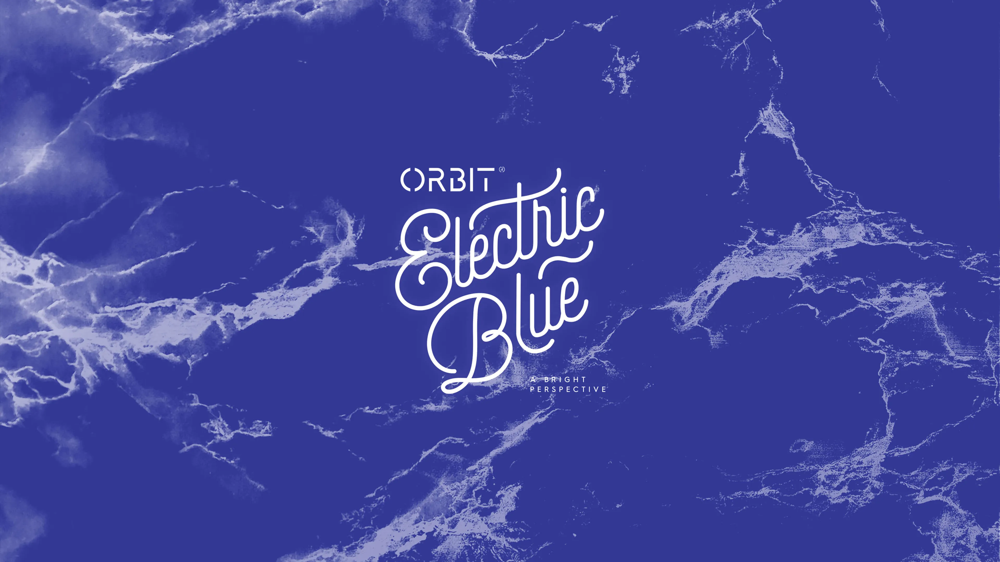
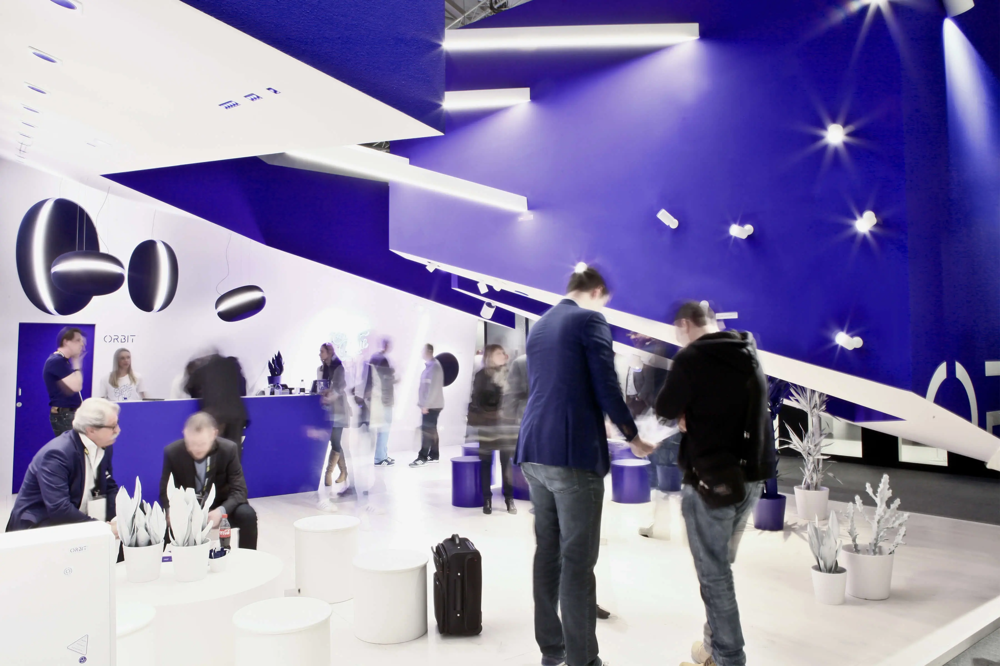
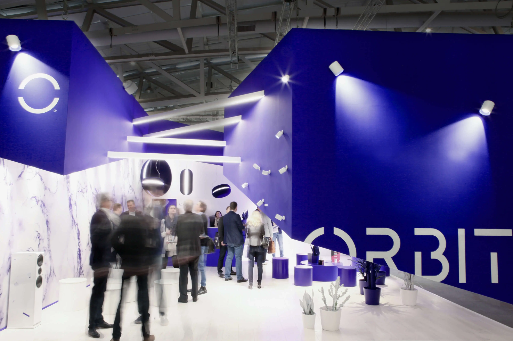
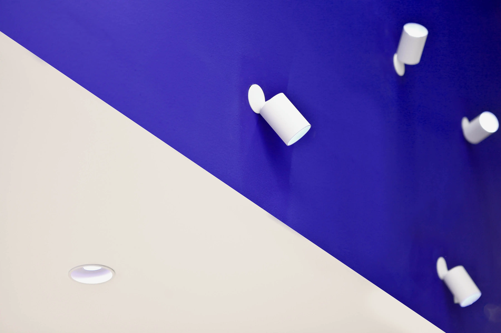
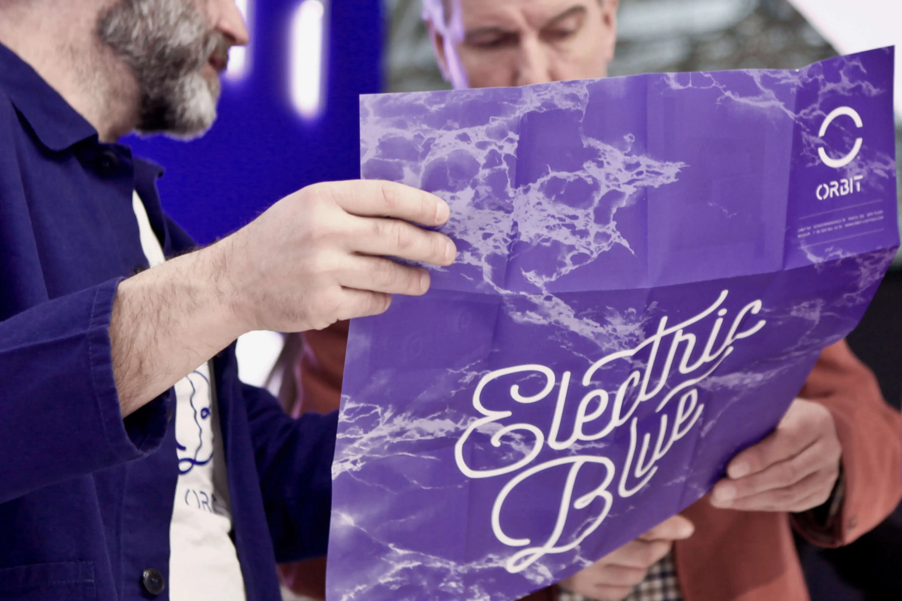
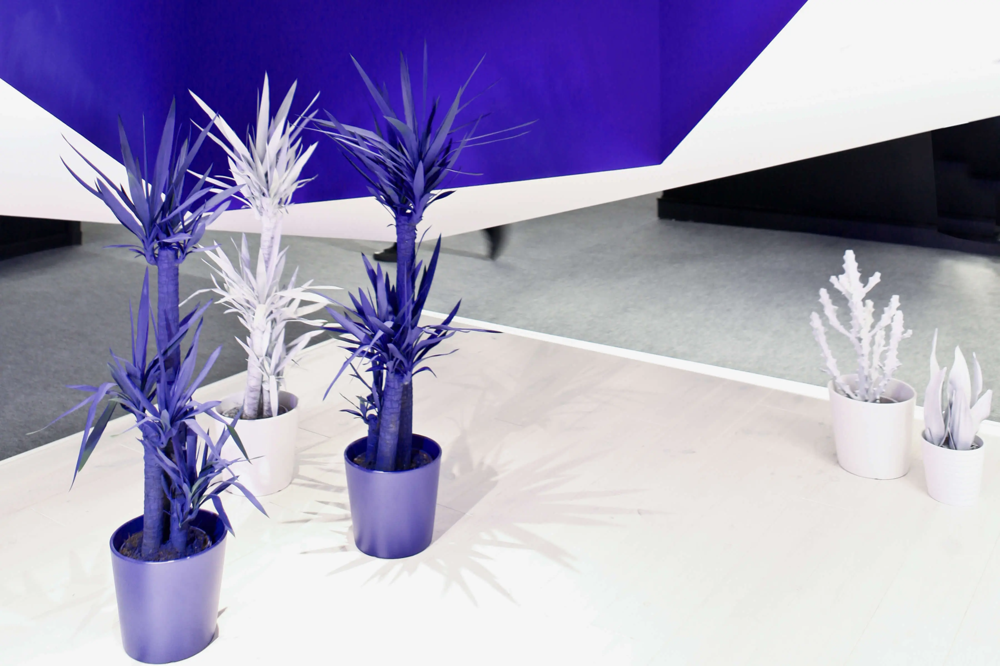
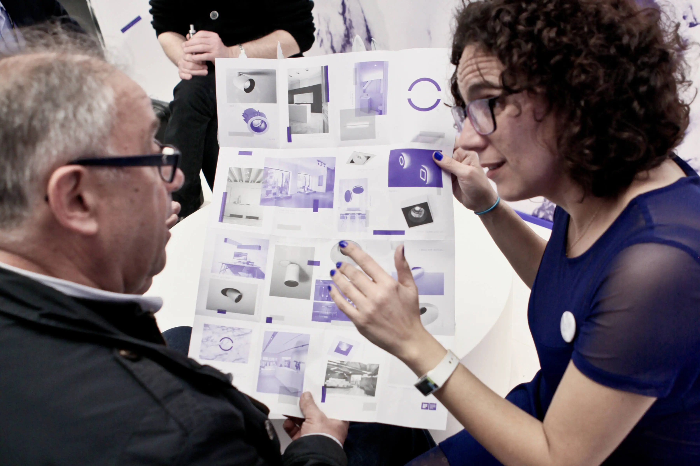
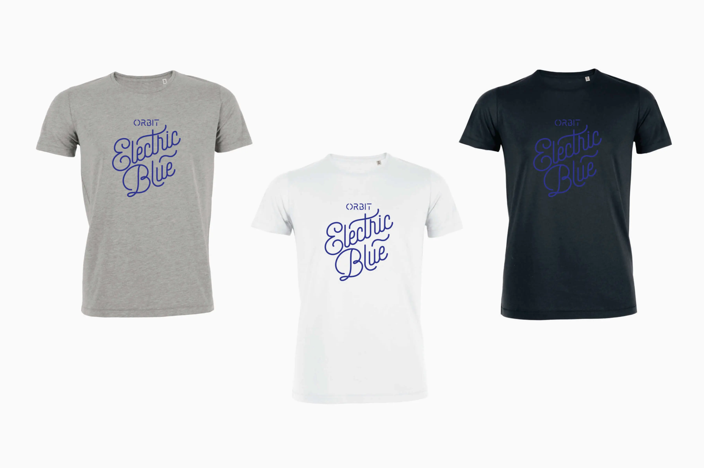
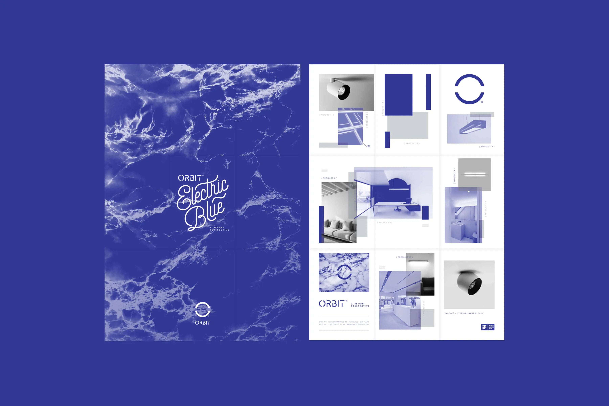

Orbit Frankfurt
april 2016
Electric Blue op Light + Building Frankfurt
- Oprichters
- Filip Staelens Wim Gielen
- Bedrijf
- Orbit
- Sector
- Verlichting
- Locatie
- Frankfurt Germany

Over deze case
Orbit trok met zijn nieuwe identiteit de grens over en koos voor 2016 het thema Electric Blue. Op de gerenommeerde beurs Light + Building in Frankfurt wilde Orbit een blijvende indruk maken. Ons team creëerde een sfeer die tegelijk eclectisch en elektrisch was, trouw aan de essentie van het merk Orbit. De stand straalde een bruisende energie uit, hield bezoekers in de ban en zorgde voor een onvergetelijke ervaring.
De aanwezigheid van Orbit op Light + Building Frankfurt was een gedurfde en zelfverzekerde stap vooruit, die de weg vrijmaakte voor toekomstig succes.






